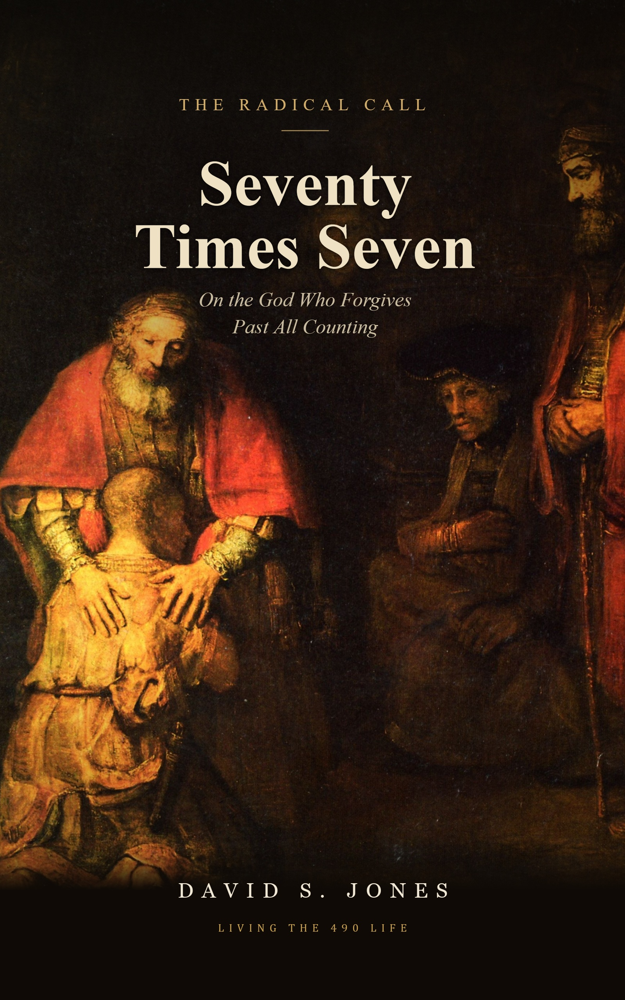

Seventy Times
Seven
On the God Who Forgives Past All Counting
When Peter asked how many times he had to forgive — seven? — Jesus answered with an earthquake: seventy times seven. Not a higher number. The end of counting itself.
Wherever you stand with God — far off, or finding your way back — there is more grace in him than there is guilt in you.

Grace received, before grace given.
The book refuses to start with your wounds. It starts with God — his holy love, the debt none of us can pay, and the cross — and only then turns to receiving forgiveness, forgiving yourself, and forgiving others. You cannot give what you have not received.
The God Who Forgives
It begins with God, not your wounds — his holy love, and the debt none of us could ever pay.
How God Forgives — the Cross
Blood and mercy. The great exchange. The wrath borne on your behalf, and the robe placed on your shoulders.
The Story Through Scripture
From Eden to the cross — a people forgiven beyond measure, and a God who cries, "How can I give you up?"
Receiving Forgiveness
The God who forgets to count. Peter's redemption. Freedom from the jail of self-condemnation.
Extending Forgiveness
The cost of keeping score — and the hardest forgivings: betrayal, abuse, injustice. Forgiveness, reconciliation, and safety, honestly untangled.
The Invitation & the Forgiven Life
Come and be forgiven — then live it daily. It closes where it must: love God, love people.
“This is not a ledger to balance. It is a chain to break.
David S. Jones
David S. Jones has spent more than twenty-five years as a consultant in the technology and cybersecurity industries. A believer in Christ for over fifty years, trained in classical music at Northern Arizona University, he is a member of Scottsdale Bible Church, where he serves on the worship teams and disciples men through the church's ministry, The Forge.
His heart is for service and for evangelism — helping ordinary people meet the God whose forgiveness has no limit. He is the father of two children, Austin and Izzy, to whom this book is dedicated.
Read it with a pen in your hand.
A companion workbook — reflection questions and space to work through each part — is on the way. Leave your email and I'll send it to you free the moment it's ready.
No spam — just the workbook and the occasional note. If the book helps you, an honest review helps others find it.
Set the ledger down.
Seventy Times Seven is available now in paperback, hardcover, and Kindle.